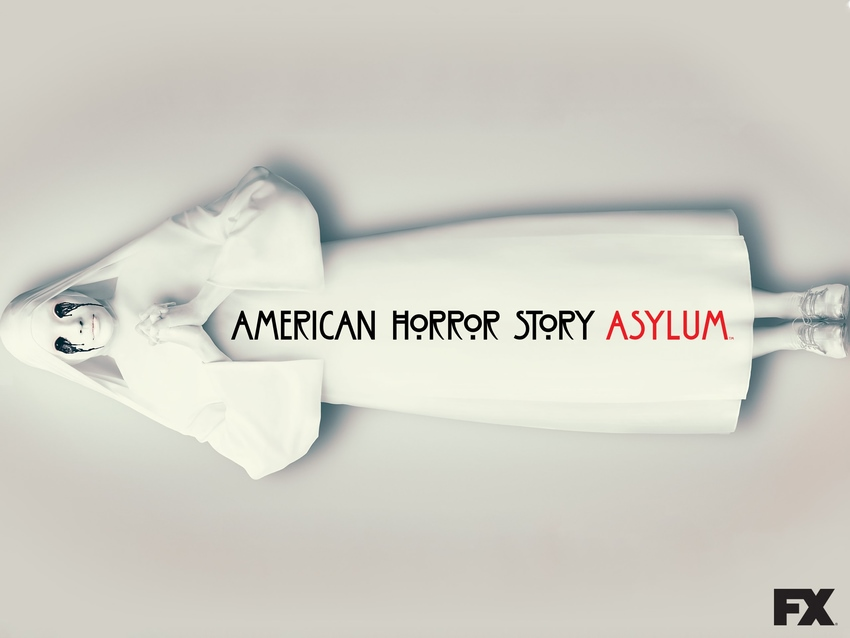

ASYLUM

TRAMA
La historia tiene lugar en 1964, en el Manicomio Católico Briarcliff, construido en 1908, que funcionó como el centro de tuberculosis más grande del país, donde murieron 46.000 personas. En 1962 el lugar es comprado por la Iglesia Católica y convertido en un manicomio para criminales dementes dirigido por el Monseñor Timothy Howard (Joseph Fiennes). Allí es enviado Kit Walker (Evan Peters), un joven que trabajaba en una gasolinera, acusado de haber matado a su esposa Alma Walker (Britne Oldford). Kit es llevado al manicomio siendo confundido con el asesino en serie Bloody Face, quien despellejaba a sus víctimas (siempre mujeres) y les cortaba la cabeza. Pero en realidad, Alma fue secuestrada por extraterrestres junto con su esposo, regresando solo este último a la Tierra. Nadie cree la historia de Kit, excepto Grace (Lizzie Brocheré), una interna. Dentro del manicomio, se encontrará con terroríficos personajes como el doctor Arthur Arden (James Cromwell) y la hermana Jude (Jessica Lange), quien encierra a Lana Winters (Sarah Paulson), una periodista curiosa acerca de Bloody Face. Las cosas se complican dentro del asilo cuando la hermana Mary Eunice (Lily Rabe), monja protegida de la hermana Jude, sufre una posesión satánica. Extraños sucesos tienen lugar en el manicomio, en donde reinan el horror, la injusticia, la demencia, el trato inhumano y el dolor.
EPISODIOS
- Bienvenidos a Briarcliff
- Trucos y tratos
- Tormenta del Noreste
- Yo soy Anna Frank - Primera parte
- Yo soy Anna Frank - Segunda parte
- Los orígenes de la monstruosidad
- Prima oscura
- Noche sin paz
- La percha
- El juego de los nombres
- Leche derramada
- Continuum
- El fin de la locura
REPARTO
- Zachary Quinto como el Dr. Oliver Thredson
- Joseph Fiennes como el Monseñor Timothy Howard
- Sarah Paulson como Lana Winters
- Evan Peters como Kit Walker
- Lily Rabe como Hermana Mary Eunice McKee / El diablo
- Lizzie Brocheré como Grace Bertrand
- James Cromwell como el Dr. Arthur Arden / Hans Gruper
- Jessica Lange como Hermana Jude (Judith Martin)
- Jenna Dewan como Theresa Morrison
- Adam Levine como Leo Morrison
- Britne Oldford como Alma Walker
- Chloë Sevigny como Shelley
- Naomi Grossman como Pepper
- Fredric Lehne como Frank